快速入门
协助端（Assistant）供帮助者使用，受助端（Assisted）供被帮助者使用。通常，帮助者会通过微信、QQ、电话、Jitsi、其他即时通讯工具或其他方便的方式与被帮助者联系。然后打开 Dayon!，就能实时看到受助端（Assisted）的电脑屏幕。
本文档截图展示的是程序的英文界面。程序本身也完整本地化为法语、德语、意大利语、西班牙语、瑞典语、俄语、土耳其语和中文（简体）。 若所配置的用户语言不在上述之列，则回退为英语。
注意：本文档对应的是最新程序版本。
译者注：中国大陆用户请注意，若协助端（Assistant）位于运营商 NAT（如 CGNAT）之后，端口无法从互联网访问，令牌或手动填写地址可能无法建立连接。可尝试连接反转，或使用内网穿透（如 FRP）、组网（如 ZeroTier）/ VPN。
详见支持页。
准备与连接
 配置协助端（Assistant）电脑
配置协助端（Assistant）电脑
Dayon! 协助端（Assistant）相当于一台服务器（受助端 - Assisted 会连接到这里），因此需要配置网络，让外网能访问到它。
默认监听 8080 端口，必要时可以改。
从第 12 版起，Dayon! 会自行创建对应的端口转发规则，前提是已启用 UPnP。
否则，仍需在 路由器 上通过 NAT 将该端口（TCP）转发到这台电脑。
常见路由器的逐步说明见 portforward.com。
可选：调整传入连接的端口（左图启用 UPnP，右图则没有）
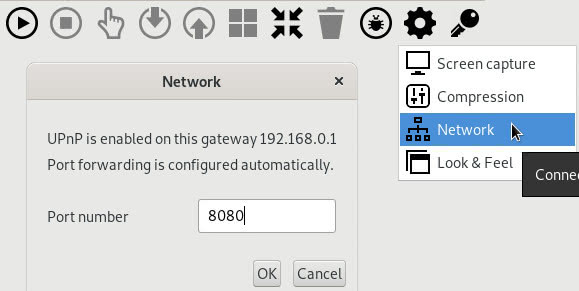
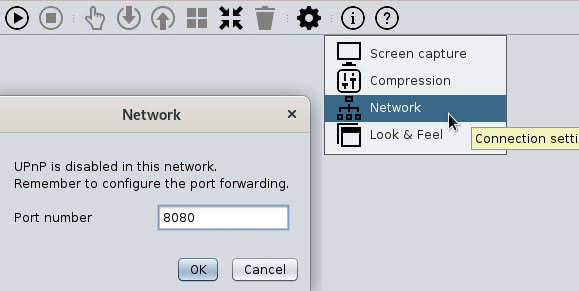
生成并复制令牌
点击钥匙图标即可生成令牌。令牌一出现在屏幕上，就会直接复制到剪贴板。 （每点一次鼠标都会生成新令牌）
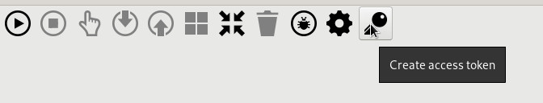
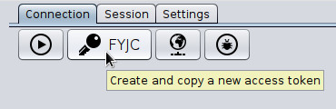
注意：如果正在使用 ZeroTier 一类的 VPN，生成令牌前可能需要先选好要写进令牌的网卡。
就这样——通过邮件、即时通讯或电话，把这个 令牌 告诉受助端（Assisted）。
心急的话：这里可以了解如何让协助端（Assistant）开始监听传入连接。
备选：不用令牌连接
如果不想生成令牌，就要确定把哪个 IP 地址 告诉受助端（Assisted），以便连到协助端（Assistant）；通常应使用你的 公网 IP 地址。
若只在本地网络里测试，可以用别的地址。点击网络按钮即可查看你的 公网 IP 地址：
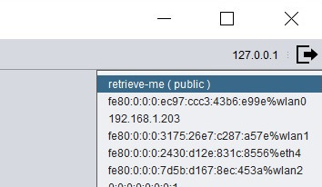
如下图所示，菜单里有一项可以把当前的 IP 地址和端口号 复制到剪贴板。然后可以直接 粘贴到聊天窗口（例如 Jitsi）或邮件中。
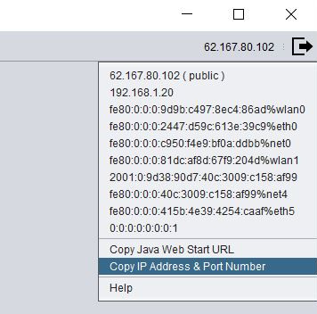
请注意，协助端程序无需使用这个 IP 地址，因为默认会监听所有可用网卡；但受助端（Assisted）需要使用该 IP 地址连接协助端。（稍后详述）
按下‘播放’按钮
点击播放按钮（最左边第一个）后，协助端（Assistant）即可接受传入连接：
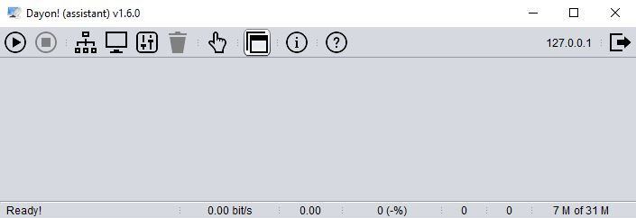
现在可以让受助端（Assisted）连接。很快，协助端（Assistant）会提示你是否接受传入连接：
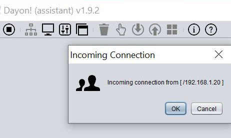
现在已连上远程电脑，并能看到其桌面。请务必比对协助端（Assistant）和受助端（Assisted）的会话指纹。
注意：如果不一致，则连接不可信！
 配置受助端（Assisted）电脑
配置受助端（Assisted）电脑
Dayon! 受助端（Assisted）相当于对外发起连接的客户端，因此这边不用配置网络。
下载并安装 Dayon!。然后启动 Dayon! 受助端，点击「播放」按钮。
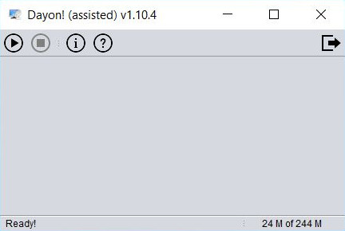
输入协助端 - Assistant 告知的令牌，点 OK 确认：
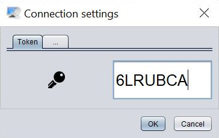
（如果最近已经连过这台协助端（Assistant），此项可以留空）
备选（不用令牌连接）：
输入协助端（Assistant）协助端提供的 IP 地址和端口号，点 OK 确认：
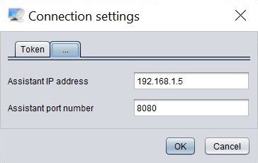
（这两个输入框都支持双击清空内容）
连接成功后，协助端（Assistant）就能看到你的屏幕。祝使用愉快！
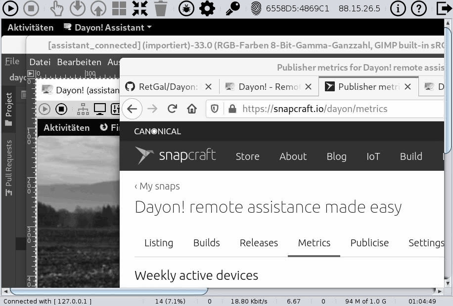
注意：如果按上述步骤仍无法连接，请检查设置是否正确。
管理会话
如果受助端（Assisted）的桌面无法完整显示在窗口中，可以缩小显示比例：
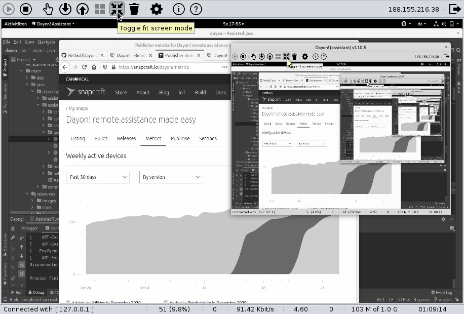
点击右侧的
 按钮，可以保持受助端（Assisted）屏幕的宽高比。请注意，窗口最大化时，此功能无效。
按钮，可以保持受助端（Assisted）屏幕的宽高比。请注意，窗口最大化时，此功能无效。
默认情况下，远程控制模式处于关闭状态；可以使用下面的图标进行开关：
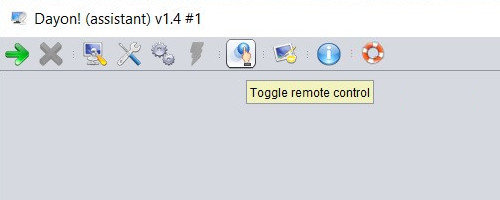
剪贴板传输
点击向上或向下按钮，可以将协助端（Assistant）的剪贴板内容传到受助端（Assisted）（向上），或把受助端（Assisted）的剪贴板内容传到协助端（Assistant）（向下）。
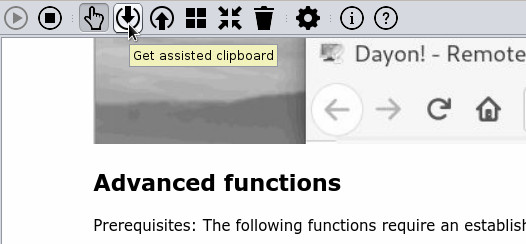
目前支持：
-
文本：在本地或受助端窗口中选中文字，复制（
Ctrl + c）， 再点击向上或向下，随后可在本地或远程应用中粘贴（Ctrl + v）。 -
文件：在本地或受助端窗口中选中一个或多个文件（
Ctrl + c），再点击向上或向下，随后可在目标位置插入文件。 - 图像：如果剪贴板里是图像（例如刚截过屏），直接点击向上或向下即可，目标端随后就能使用剪贴板中的图像。
发送 Windows 或 Cmd 按键
要发送 *Windows 键的按下操作，请点协助端（Assistant）控制栏里的 Windows 按钮：
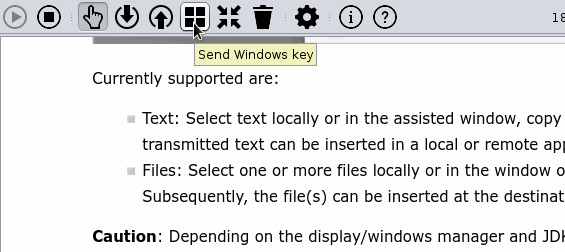
该键会保持按下，直到再点一次按钮，这样就能发送 Windows 快捷键。
例如要在受助端（Assisted）最小化所有窗口，先点 Windows 按钮，再按 M，然后再点一次 Windows 按钮。
*注意：若受助端（Assisted）运行的是 macOS，则显示/传输的是 Cmd 键/按钮。
发送 Ctrl 按键
多数情况下，Ctrl 会像其他按键一样传到受助端（Assisted），但有时不会。例如 Ctrl + Alt + Delete 通常会被协助端（Assistant）操作系统「捕获」，因而传不过去。
这时，协助端（Assistant）控制栏里 Windows 按钮旁边的 [Ctrl] 按钮就很有用。
行为和 Windows 按钮一样：按键会保持按下，直到再点一次。
因此要把 Ctrl + Alt + Delete 发给受助端（Assisted），需先点 [Ctrl] 按钮，再同时按 Alt 和 Delete，松开后，最后再点一次 [Ctrl]。
注意：
Ctrl + Alt + Delete 组合键发送功能在 Windows 受助端（Assisted）上可能无效。
如果需要打开“运行”对话框，请使用 Windows + R。
在受助端截屏
点击「相机」按钮——会直接截屏，不再询问。 截取的图片会保存到受助端（Assisted）的剪贴板，并自动传到协助端（Assistant）。
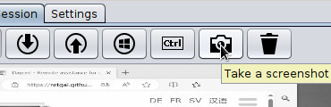
重置屏幕捕获
重置屏幕捕获（垃圾桶图标）会把捕获间隔恢复为已配置的值，清除所有缓存的屏幕数据， 并从受助端（Assisted）重新获取一帧屏幕画面。
发起在线会议，面对面聊天
在受助端（Assisted）和协助端（Assistant）都点击会话指纹，即可在 Jitsi 里开始一场共同的在线会议。
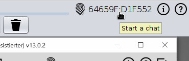
状态统计
协助端（Assistant）窗口的状态栏除键盘布局外，还会显示以下统计信息：
- 网络带宽
- 压缩比：初始捕获（仅差异）被压缩了多少倍
- 图块数量（缓存命中率）：经网络传输的图块数量以及缓存命中。
- 跳过的捕获次数（掉帧）：越低越好。数值越高，说明捕获速度超过了 CPU 的处理能力，更多屏幕捕获被跳过。可以适当增大捕获间隔来降低该数值。
- 合并的图块数量（合帧）：越低越好。数值越高，说明压缩处理跟不上屏幕捕获速度，更多捕获需要合并后再传输。可以放慢捕获速度，和/或使用更快的压缩算法。
- 内存
- 会话时长
就这些！更多信息见设置页。